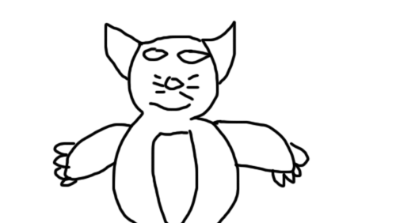
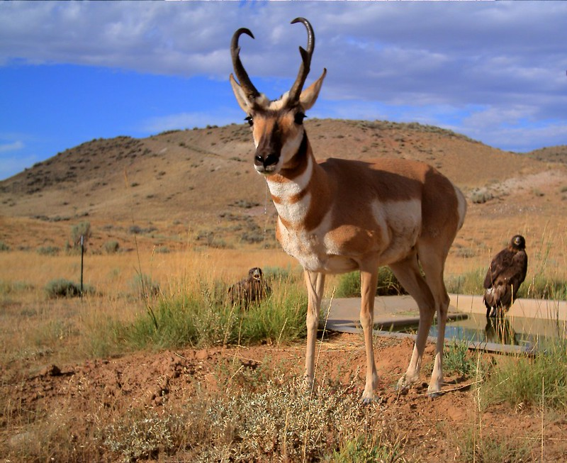

After walking, a raccoon saw its friends after a month. The raccoon saw its friends the entire time and they are called deer, bear, and bird. Raccoon and its friends rejoined and played together for a while and they look happy.
The raccoon is able to jump and run like a leopard. Just the Raccoon moves in real life. The kind of energy is high speed because the Raccoon likes to run through the forest.
 